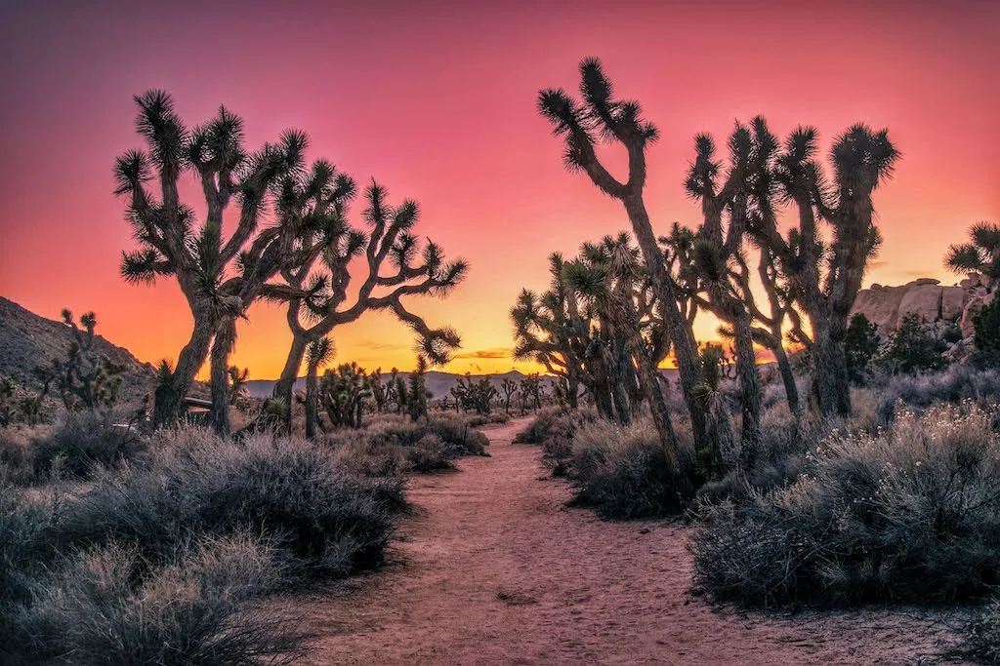
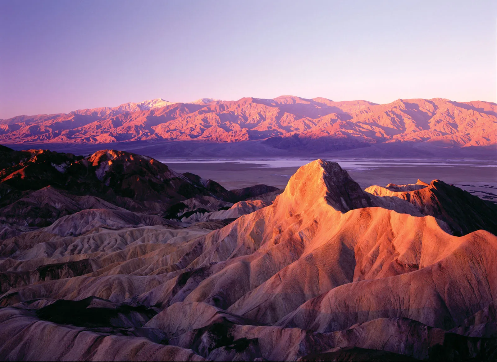
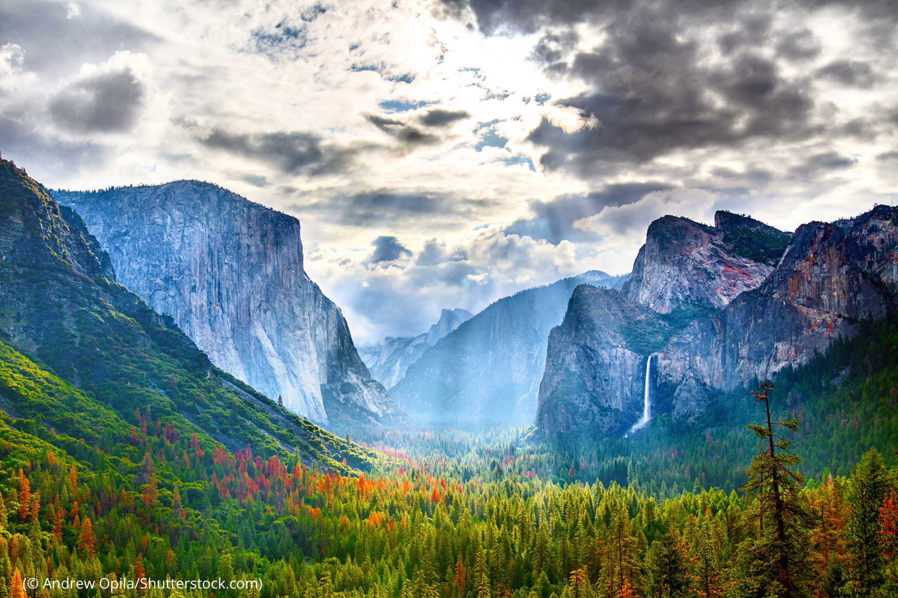
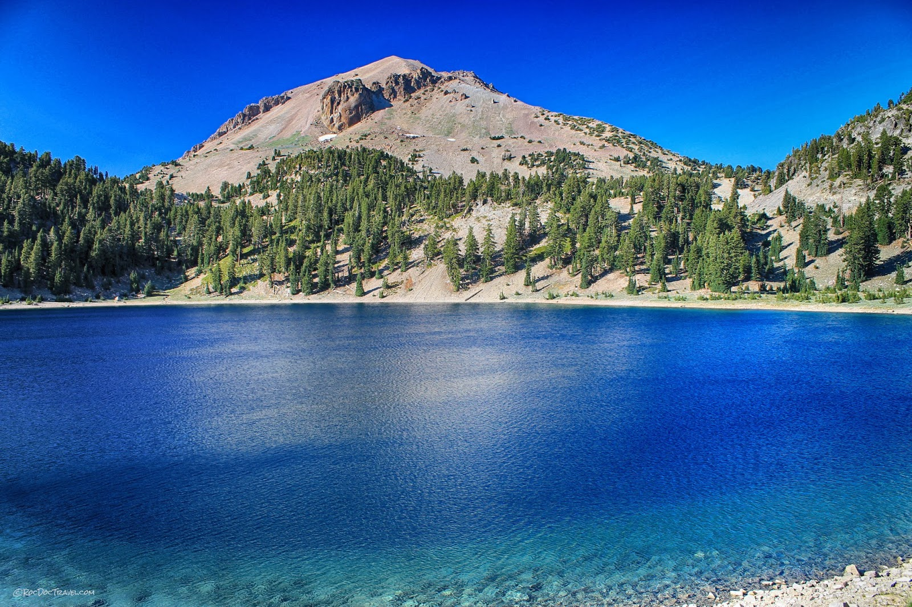
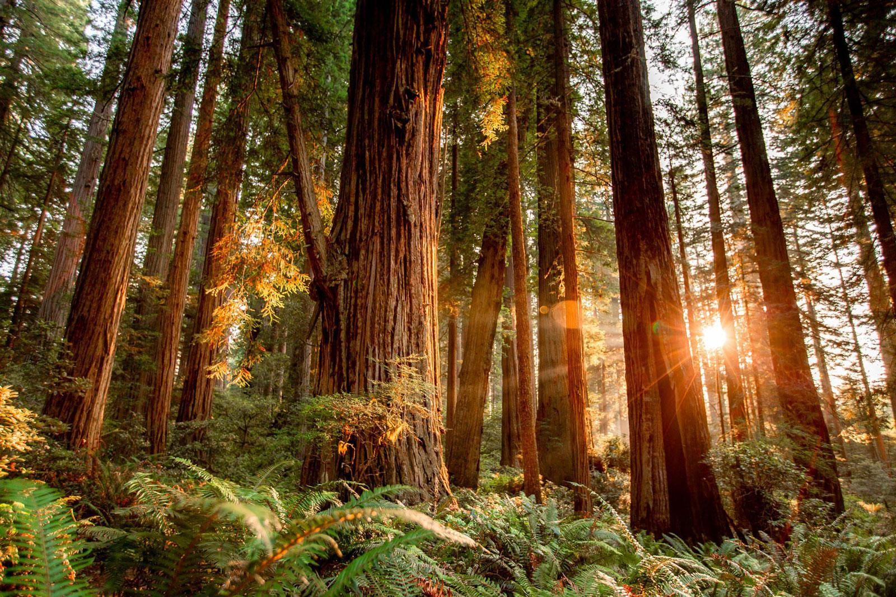
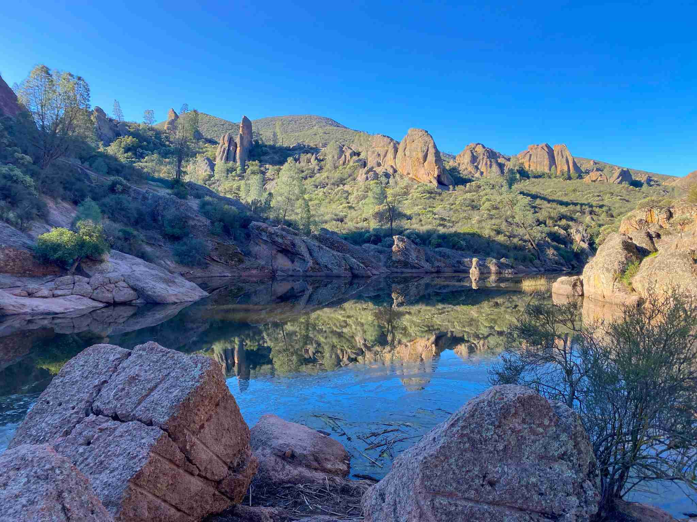
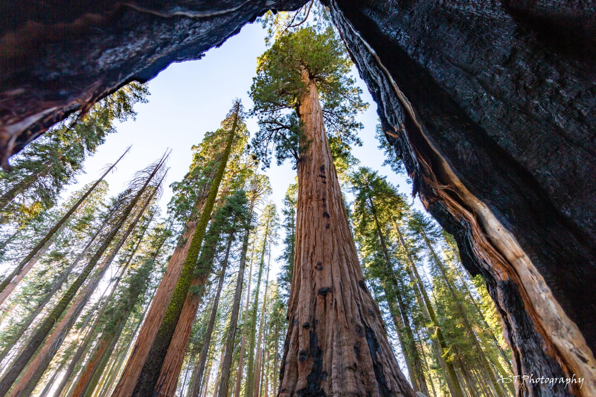
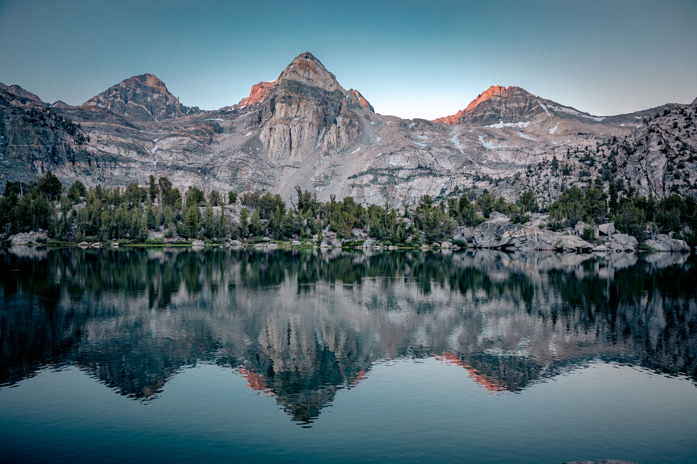

Your road trip, start to finish...
Discover the ultimate itinerary to visit all nine of California's stunning national parks. Whether you're a seasoned explorer or planning your first adventure, let us simplify your travel plans and unlock the beauty of California's diverse national parks.
-
Channel Islands

Welcome to the Channel Islands, a pristine archipelago off California's coast. Each island boasts unique landscapes and wildlife—Santa Cruz for its hills and foxes, Anacapa for sea arches and seabirds, Santa Rosa for beaches and history, and Santa Barbara for its lighthouse and marine life. Explore this sanctuary of natural beauty and tranquility.
-
Joshua Tree
Welcome to Joshua Tree National Park, where iconic Joshua trees dot a desert landscape of rugged rock formations. Explore surreal rock piles at Hidden Valley, hike Ryan Mountain for towering views, and visit Barker Dam's historic petroglyphs. As the sun sets, witness nature's artistry in the vibrant desert sky, casting a magical glow over this serene wilderness.
-
Death Valley
Welcome to Death Valley, where California's desert unfolds in extremes of rugged beauty. From the shadowy Panamint Mountains to the salt flats of Badwater Basin, explore wind-sculpted dunes at Mesquite Flat and vibrant badlands at Zabriskie Point. Drive through expansive desert landscapes, encountering resilient flora and glimpses of wildlife. At night, marvel at the Milky Way above this serene, timeless landscape.
-
Yosemite
Welcome to Yosemite National Park, a stunning landscape of granite cliffs, towering waterfalls, and lush valleys. Explore iconic landmarks like El Capitan and Half Dome in Yosemite Valley, marvel at Yosemite Falls, hike among giant sequoias in Mariposa Grove, and enjoy panoramic views from Glacier Point. End your day at Bridalveil Fall, where misty waters complement the park's natural splendor.
-
Lassen Volcanic
Welcome to Lassen Volcanic National Park, where geothermal features like Sulphur Works and Bumpass Hell showcase its volcanic origins. Hike to Kings Creek Falls and drive the scenic Lassen Volcanic Highway to Lassen Peak for panoramic views of volcanic terrain. End your day at Manzanita Lake, surrounded by serene landscapes under the starry sky.
-
Redwood Forest
Welcome to Redwood National Park, where towering coastal redwoods create a cathedral-like canopy over a lush forest floor. Trails wind through ancient groves, where you can touch trees older than the Roman Empire. Along the rugged coastline, waves crash against dramatic sea stacks, while wildlife thrives in this serene sanctuary. Experience sunsets that paint the sky with vibrant hues, making every moment here unforgettable.
-
Pinnacles
Welcome to Pinnacles National Park, a hidden gem of California's central coast known for its towering rock formations and intricate caves carved by ancient volcanic activity. Hike through chaparral-covered hillsides adorned with wildflowers, explore Bear Gulch Cave's stalactites, and spot California condors soaring overhead. End your day with a sunset hike to High Peaks for panoramic views of rugged spires and distant valleys, showcasing the park's timeless beauty.
-
Sequoia
Welcome to Sequoia National Park, home to towering groves of giant sequoias including the General Sherman Tree, the largest living tree on Earth. Explore Crescent Meadow, hike among wildflowers in lush meadows, and ascend Moro Rock for breathtaking panoramic views. End your day at Tokopah Falls, where cascading waters complement the park's serene beauty.
-
Kings Canyon
Welcome to Kings Canyon National Park, where towering sequoias in Grant Grove lead to the dramatic Kings Canyon Scenic Byway. Follow trails to majestic waterfalls like Roaring River Falls and Mist Falls, and end your day at Panoramic Point for sweeping views of the Sierra Nevada and the canyon below.